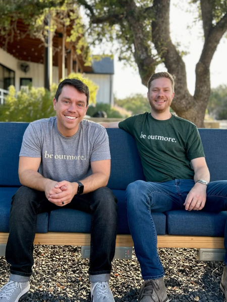
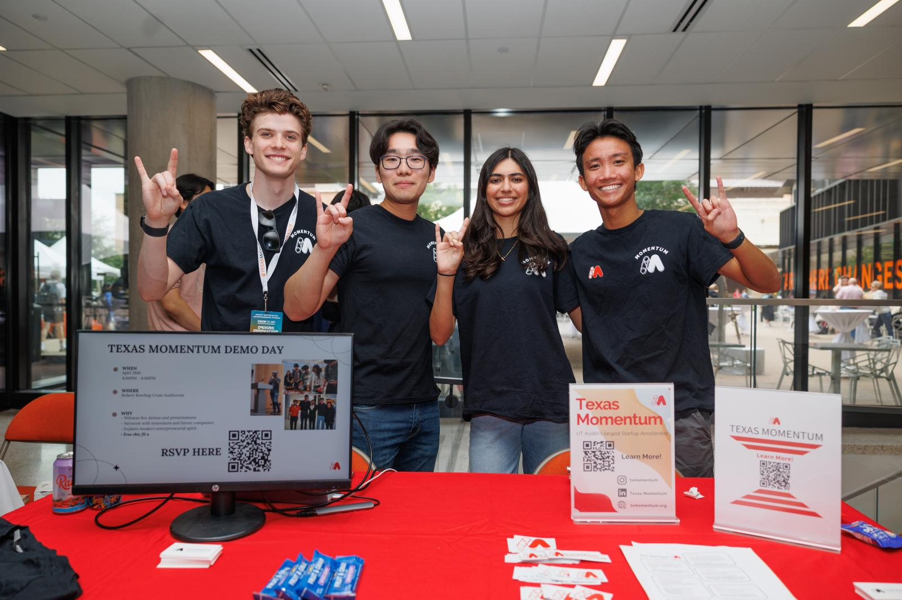

TEXAS Entrepreneurship serves UT's undergraduates, graduate students and alumni by fostering an entrepreneurial spirit and connecting them to educational, financial and networking resources.
With more than 50 cutting-edge programs for undergraduate, graduate and professional students, UT is at the forefront of the intersection between higher education, innovation and entrepreneurship. As the front door to the University's robust entrepreneurial ecosystem, TEXAS Entrepreneurship is here to foster the entrepreneurial spirit that runs deep in all of our colleges and schools.


TEXAS Entrepreneurship empowers Longhorns to achieve entrepreneurial success by providing access to the University's vast resources, fostering collaboration and engagement across the campus and throughout the broader entrepreneurial community, and elevating the impact of student and alumni founders beyond the Forty Acres.
#1
Austin is the Top City in the U.S. to Start a Business
Princeton Review, 2025
#2
Undergraduate Entrepreneurship Program in the Nation
Princeton Review, 2025
#7
Graduate Entrepreneurship Program in the Nation
Princeton Review, 2025
$4.5 Billion
Raised by Austin Startups in 2024
PitchBook-NVCA Venture Monitor, 2024
Are you a UT researcher, staff member or graduate student with an idea or technology that includes University IP? Discovery to Impact handles the disclosure, licensing and intellectual property associated with those projects. They also manage the portfolio of licensable opportunities.
There are many ways to get involved in entrepreneurship at UT. Learn more about our industry and community partnerships, schedule an appointment with us, take a campus tour or subscribe to our newsletter.